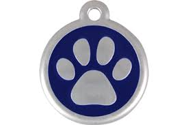

<div class="container-fluid body-content">

    <div class="mypage-headersmall">
        
        Report a possible lost pet seen
    </div>

    <br />

    <div id="myModal1" class="modal fade" role="dialog">
        <div class="modal-dialog">

            <!-- Modal content-->
            <div class="modal-content">
                <div class="modal-header">
                    <button type="button" class="close" data-dismiss="modal">&times;</button>
                    <h4 class="modal-title">Why register your pet?</h4>
                </div>
                <div class="modal-body">
                    <p>Some text in the modal.</p>
                </div>
                <div class="modal-footer">
                    <button type="button" class="btn btn-default" data-dismiss="modal">Close</button>
                </div>
            </div>
        </div>
    </div>
    <div class="alert alert-info">
        <strong>Important!</strong> If you find a lost pet or see a pet please use the search below so we can try and identify and unit pet with owner.
        Please take 5 minutes and read below before you decide not to get involved.
    </div>
    <div class="row row-centered">
        <a data-toggle="modal" data-target="#myModal1" class="btn btn-primary-blue-small btn-lg">Please take the time to read this &raquo;</a>
    </div>
    <br />
</div>